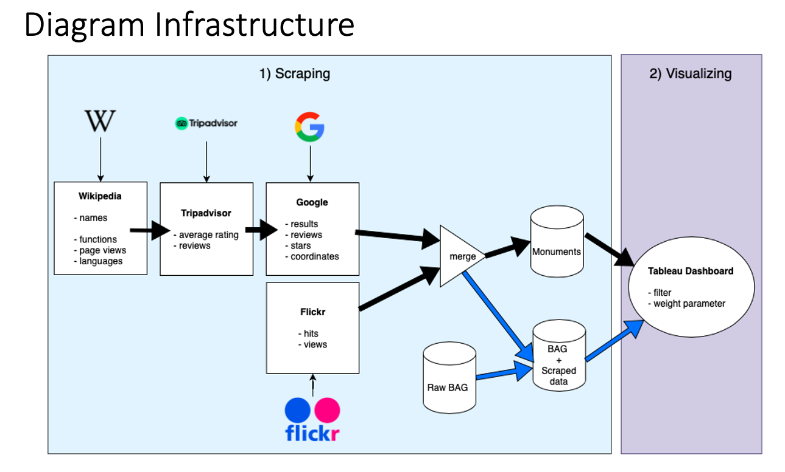

Enhancing feature space through scraping for Gemeente Amsterdam
Jan 2022 ~ MSc Course "Data Systems Project"
Length: 1mo (at 1.0 FTE)
Programming language: Python (Pandas, requests, Beautiful Soup, RE, NLTK, Math,
datetime, GeoPandas, SciPy, scikit-learn)
Software: Tableau
Data:
- BAG dataset (Basisregistratie adressen en gebouwen = basic registration
addresses and buildings), containing information about every building in Amsterdam,
such as the address, the neighborhood, and the function of the building
- unstructured data on the Internet
Problem description:
Enhance the feature space for fire effect modeling through web scraping and design a
dashboard to visualize the results
Approach & Results:
The municipality of Amsterdam is responsible for setting up fire safety inspections for the
buildings in Amsterdam. However, because there are over 500.000 buildings in the city, the
municipality created a ranking that sorts all the properties in descending order based on the
risk score, defined as chance x effect. During one of the meetings with Gemeente Amsterdam,
a gap in the effect score was noticed. Hence, the proposed solution is based on the idea that there
is unstructured information publicly available online that can positively contribute to a
more accurate effect score.

The infrastructure of the proposed system can be seen above. The system is composed of two
main parts, namely the scraping and visualizing. The first one starts by extracting names of public
assets within Amsterdam from Wikipedia that will play as the rows of the first dataset. Since
the constructions are communal, it was assumed that their online popularity reflects their
true real-world popularity. Thus, extra features from Wikipedia, Tripadvisor, Google, and
Flickr were scraped using Beautiful Soup to represent the interest in the respective objects.
The described process is depicted in the upper branch of the diagram, following the black
arrows into the Monuments (POI) dataset.
On the other hand, since other non-public buildings are also important, their addresses were taken
from the BAG dataset, and the value of each feature was computed considering the public assets
in the vicinity and aggregating their respective variables. One can see this in the diagram
following the blue arrows. Finally, the two derived datasets are visualized in a Tableau dashboard that allows the user
to apply various filters and give specific attributes more importance if wanted.
The final dashboard can be accessed at:
https://public.tableau.com/app/profile/fabian4248/viz/GroupD1_16439031396800/DOCUMENTATION?publish=yes